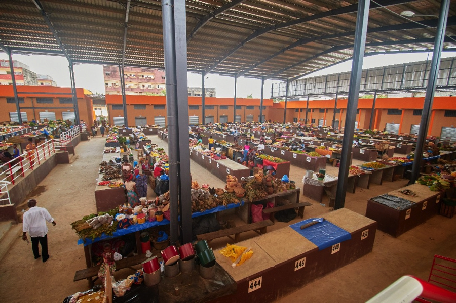
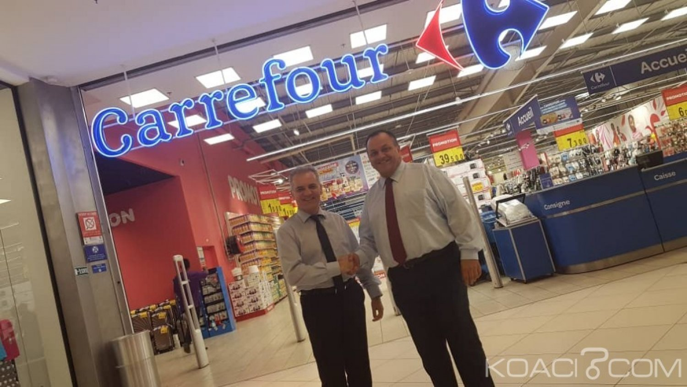

Yopougon : Dynamisme Socio-Économique
Découvrez les piliers sociaux et économiques qui font de Yopougon le cœur vibrant d'Abidjan et un moteur de développement pour la Côte d'Ivoire.
L'Aspect Économique de Yopougon
Yopougon est un pôle économique majeur...

Commerce et Marchés
La commune est réputée pour ses grands marchés...

Zone Industrielle
Yopougon abrite une importante zone industrielle...
Services et Secteur Tertiaire
Le secteur des services est en pleine expansion...

Infrastructures et Transports
Sa position stratégique et ses infrastructures de transport...
L'Aspect Social de Yopougon
Démographie et Diversité
Yopougon est la commune la plus peuplée d'Abidjan...
Éducation et Santé
La commune abrite de nombreuses infrastructures éducatives...
Vie Associative et Communautaire
Le tissu social de Yopougon est riche de multiples associations...
Sécurité et Cadre de Vie
La municipalité travaille activement à l'amélioration de la sécurité...